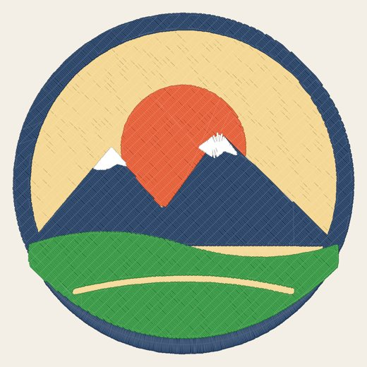
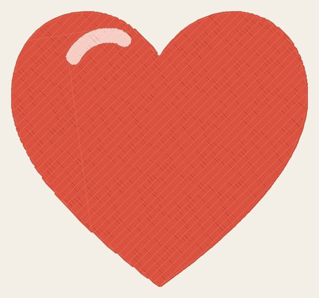
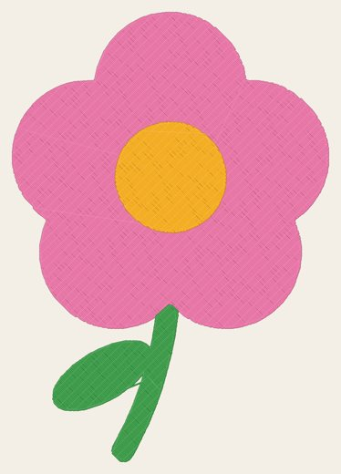
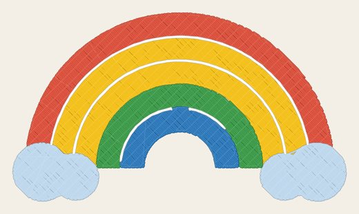

🎨
Colour separation
2 to 16 threads, background removed automatically, pixel specks merged to avoid useless stitches.
Import a logo or an illustration: FilTrace vectorizes it colour by colour, lays out the stitches (fill, satin, running) and exports a file ready for your machine.
No install, no account. Your images stay on your device.
✓ bernette Chicago 7 preset: .EXP file and 110×170, 100×100, 40×40 hoops in one click.
Four steps from image to machine file. Everything can be adjusted at each step.
PNG, JPG, SVG or WEBP, by drag and drop or copy-paste. Images with flat colours give the best results.
The image is reduced to the number of threads you choose, cleaned of tiny details and split into vector layers, one per colour.
Automatic satin for thin shapes, tatami fill for areas, running stitch for outlines — or set each layer yourself.
Download a DST, PES, JEF, EXP or VP3 file, plus a printable thread order sheet.
A complete embroidery editor, with nothing to install.
2 to 16 threads, background removed automatically, pixel specks merged to avoid useless stitches.
Narrow shapes (text, outlines, strokes) use satin that follows each shape.
Brush, eraser, bucket and picker to touch up each colour area. Unlimited undo / redo.
Angle, density, stitch length, pull compensation, underlay, outline, triple stitch, stitch order.
Thread-by-thread preview on your fabric colour and a stitch-by-stitch animation.
Names and words in several fonts, at the height you want in millimetres, alone or added to an image.
Travel stitches run inside shapes instead of jumping: ideal for machines without an automatic trimmer, like the Chicago 7.
Open an existing DST, PES, JEF, EXP or VP3 to view it, resize it or save it in another format.
Cotton, denim, t-shirt, towel, cap, thin fabric: adapted density and compensation, with the right stabilizer.
Thread order step by step, threads to trim and appliqué instructions while the machine stitches.
Size in millimetres, hoop check (4×4, 5×7, 6×10…) and automatic fit.
Each colour layer can be stitched differently.
Stitch previews generated from our templates. Stitch them, then share your creations in the community gallery.




Exported files work on almost all home and professional embroidery machines.
| Format | Brands | Notes |
|---|---|---|
| DST | Tajima, Barudan, Ricoma, Happy, most pro machines | Universal format, colours set on the machine |
| PES | Brother, Baby Lock, Bernette, Deco | Brother thread colours included |
| JEF | Janome, Elna, Kenmore | Janome thread colours included |
| EXP | bernette Chicago 5/7, Bernina, Melco | The only format the Chicago 7 reads (USB stick) |
| VP3 | Pfaff, Husqvarna Viking | Exact RGB colours included |
| SVG | Inkscape / Ink/Stitch, Illustrator | One vector layer per colour |
No. All processing (vectorization, stitch generation, file writing) happens in your browser. Nothing is uploaded.
Images with sharp edges and flat colours: logos, cliparts, drawings, bold text. Photos work less well: reduce the number of colours, increase clean-up, or use the line drawing style.
bernette Chicago 7: EXP (built-in preset). Brother / Baby Lock: PES. Janome: JEF. Pfaff / Husqvarna: VP3. Professional and multi-head machines: DST. If in doubt, DST is read by almost every machine.
Yes: repaint colour areas with the brush, erase, merge layers, change the order, angle and density, or add a new layer and draw it.
You choose the size in millimetres. FilTrace checks the design fits the selected hoop and can shrink it automatically.
Yes: “Save” keeps the design in “My projects” on your device, and a personal code syncs your projects between devices.